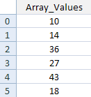
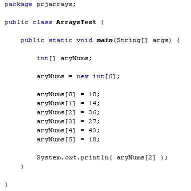
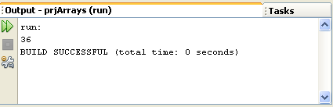

So far, you have been working with variables that hold only one value. The integer variables you have set up have held only one number, and the string variables just one long string of text. An array is a way to hold more than one value at a time. It's like a list of items. Think of an array as the columns in a spreadsheet. You can have a spreadsheet with only one column, or lots of columns. The data held in a single-list array might look like this:

Like a spreadsheet, arrays have a position number for each row. The positions in an array start at 0 and go up sequentially. Each position in the array can then hold a value. In the image above array position 0 is holding a value of 10, array position 1 is holding a value of 14, position 2 has a value of 36, and so on.
To set up an array of number like that in the image above, you have to tell Java what kind of data is going in to your array (integers, strings, boolean values, etc). You then need to say how many positions the array has. You set them up like this:
int[ ] aryNums;
The only difference between setting up a normal integer variable and an array is a pair of square brackets after the data type. The square brackets are enough to tell Java that you want to set up an array. The name of the array above is aryNums. Just like normal variables, you can call them almost anything you like (with the same exceptions we mentioned earlier).
But this just tells Java that you want to set up an integer array. It doesn't say how many positions the array should hold. To do that, you have to set up a new array object:
aryNums = new int[6];
You start with your array name, followed by the equals sign. After the equals sign, you need the Java keyword new, and then your data type again. After the data type come a pair of square brackets. In between the square brackets you need the size of the array. The size is how many positions the array should hold.
If you prefer, you can put all that on one line:
int[ ] aryNums = new int[6];
So we are telling Java to set up an array with 6 positions in it. After this line is executed, Java will assign default values for the array. Because we've set up an integer array, the default values for all 6 positions will be zero ( 0 ).
To assign values to the various positions in an array, you do it in the normal way:
aryNums[0] = 10;
Here, a value of 10 is being assigned to position 0 in the array called aryNums. Again, the square brackets are used to refer to each position. If you want to assign a value of 14 to array position 1, the code would be this:
aryNums[1] = 14;
And to assign a value of 36 to array position 2, it's this:
aryNums[2] = 36;
Don't forget, because arrays start at 0, the third position in an array has the index number 2.
If you know what values are going to be in the array, you can set them up like this instead:
int[ ] aryNums = { 1, 2, 3, 4 };
This method of setting up an array uses curly brackets after the equals sign. In between the curly brackets, you type out the values that the array will hold. The first value will then be position 0, the second value position 1, and so on. Note that you still need the square brackets after int, but not the new keyword, or the repetition of the data type and square brackets. But this is just for data types of int values, string, and char values. Otherwise, you need the new keyword. So you can do this:
String[ ] aryStrings = {"Autumn", "Spring", "Summer", "Winter" };
But not this:
boolean[ ] aryBools = {false, true, false, true};
To set up a boolean array you still need the new keyword:
boolean[ ] aryBools = new boolean[ ] {false, true, false, true};
To get at the values held in your array, you type the name of the array followed by an array position in square brackets. Like this:
System.out.println( aryNums[2] );
The above code will print out whatever value is held at array position 2 in the array called aryNums. But let's get some coding practice.
Start a new project and call it anything you like. Don't forget to change the name of the Class to something relevant.
Type the following code into your new Main method:

When you run the programme you should see this in the Output window:

Change the array position number in the print line from 2 to 5 and 18 should print out instead.
In the next part, we'll take a look at how to use arrays with loops.